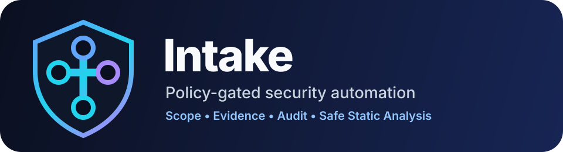

Intake 1.0 Documentation
Policy-gated security automation for authorized reverse engineering, evidence handling, durable jobs, audit logging, and safe assessment workflows.
Intake 1.0 releaseStable product scope, major capabilities, validation gates, and distribution trust.
Application capabilitiesWhat Intake can do and the product guardrails it enforces.
Supported scopeSupported deployments, operator requirements, and excluded use cases.
QA planUnit, contract, smoke, integration, and release acceptance gates.
Operations guideRunbook material for local operation and controlled execution.
Threat modelSecurity boundaries, assumptions, and intentionally blocked behaviors.
Security boundaryAllowed defaults, blocked defaults, and operator safety model.
Supply-chain securityImage scanning, SBOMs, provenance attestations, and release verification.
Package publishingHow the GHCR image is built, tagged, and consumed.
Container usageHow to run Intake from Compose or the published GHCR image.
Release processHow to tag, validate, and publish a versioned release.
BadgesREADME badge sources and package/release status.
Run locally with docker compose up --build, then open /ui or /docs.